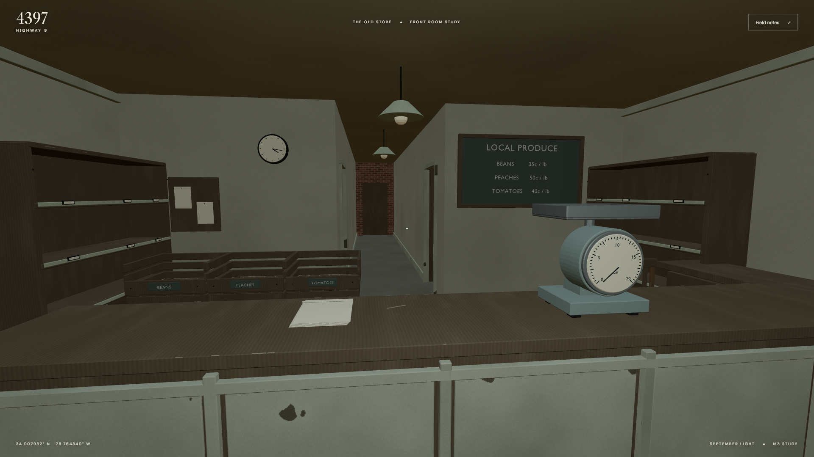
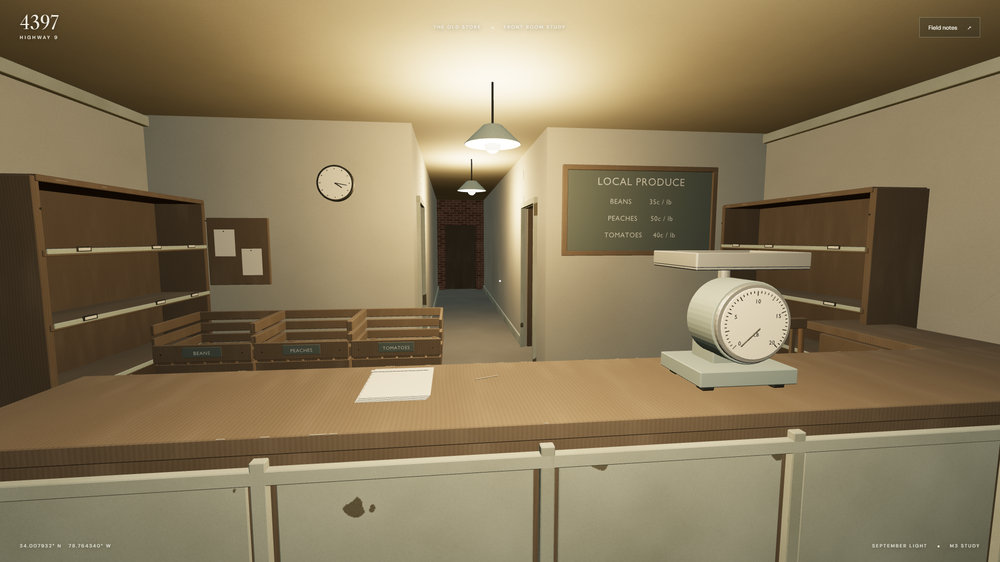
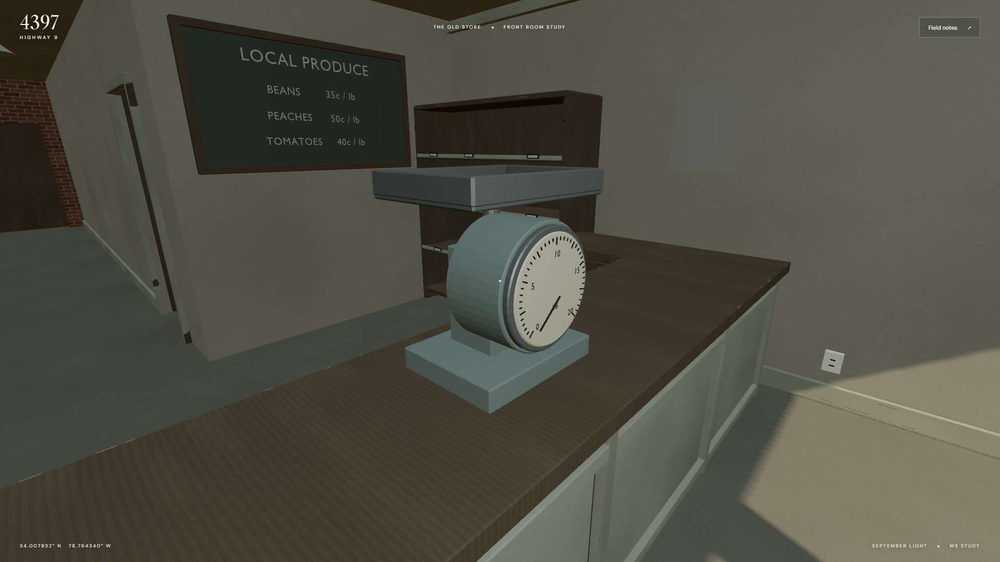
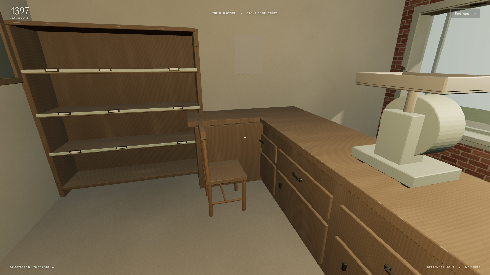
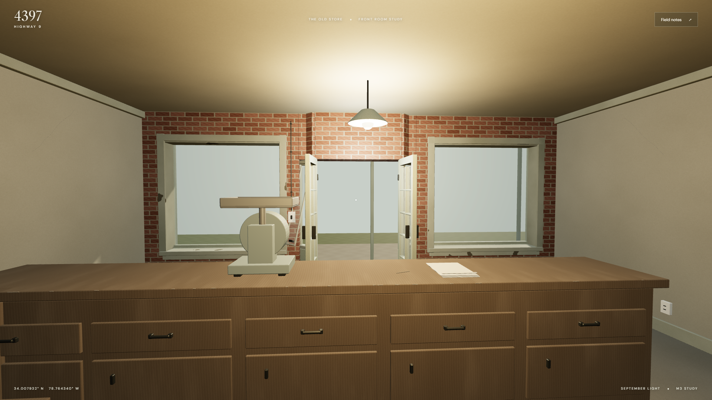
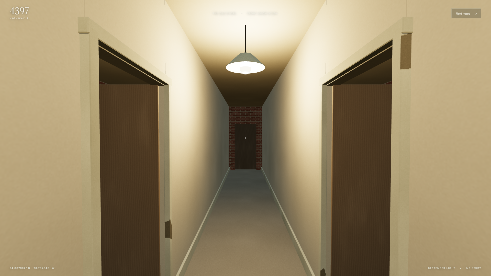
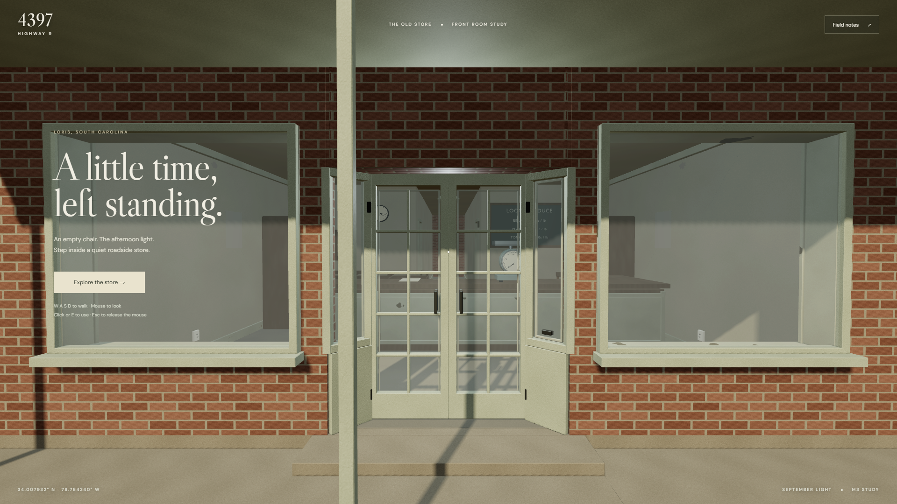
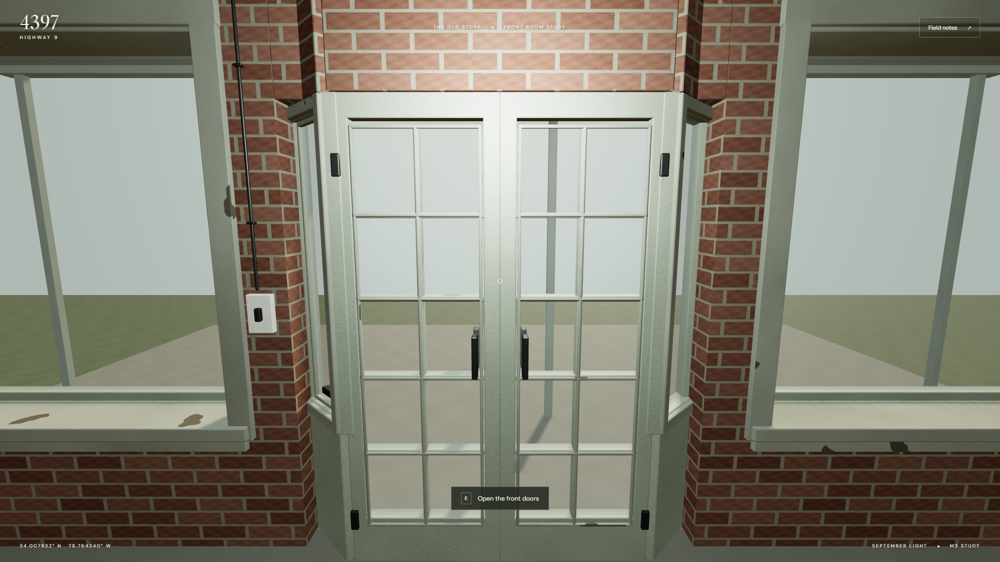
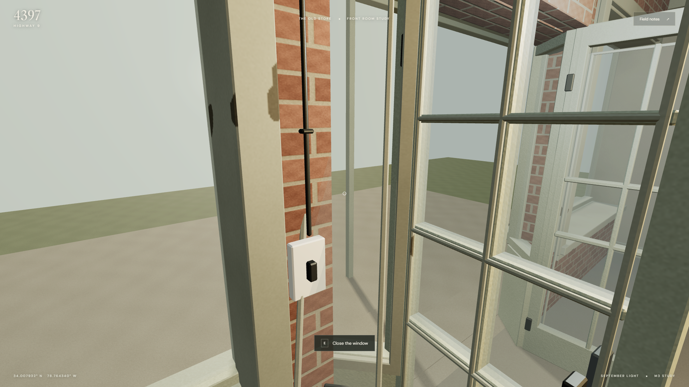

4397 Highway 9 · M3 revision 3 · Visual benchmark approved
A place to be served.
A shallow customer area, a long wooden service counter, and closer storerooms. Empty produce bins, an old mechanical scale, faded prices and the empty chair give the interior a specific former use. The intended mood is quiet and sad.
The counter is 2.40 m from the front facade (about 7 feet inside the recessed entrance). Storeroom fronts move from 8.80 to 5.80 m. Walk around the counter’s left end to reach the serving area and open passage. These are invented interior choices for review.

Customer view in daylight, with the room lights off.
The same service area with the room lights on.
Mechanical weighing scale, paper bags and empty produce bins.
The empty chair stays on the right, behind the service counter.
The serving side looking back toward the storefront.
Closer storeroom entrances and the continuous central passage.
The retained exterior and entrance.
The corrected recessed door grid and interior trim.
The approved right return pane tilted inward.Brian approved this layout and atmosphere. M3 remains in progress for target-device/budget confirmation. Rear-room dressing and the wider site remain unfinished.